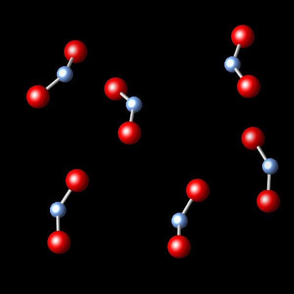
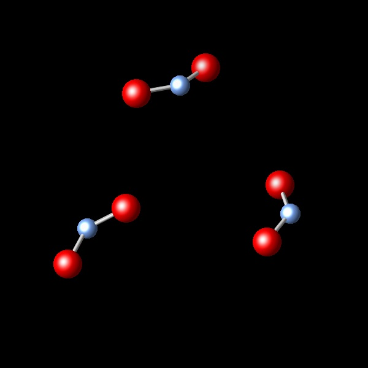
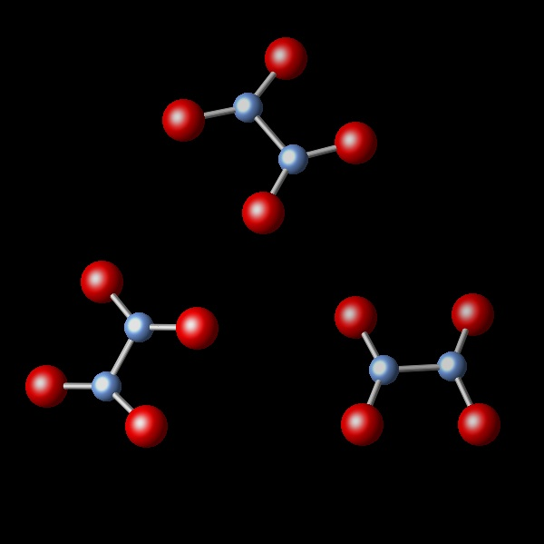
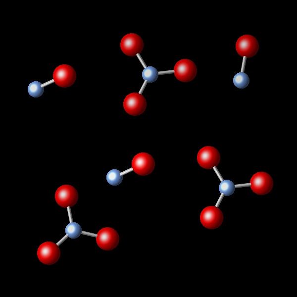
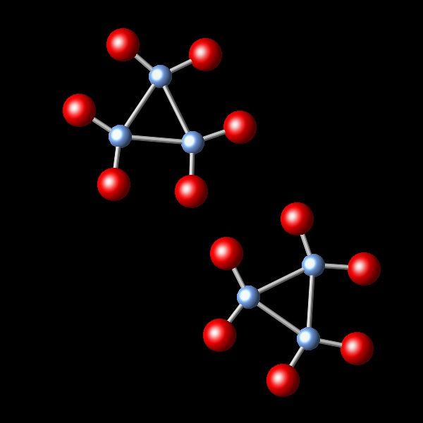

Gases 6


Se tiene un gas encerrado en un recipiente representado por la siguiente figura:
|  |
Tiene lugar una reacción química, manteniendo constantes la presión y la temperatura. Se observa que el volumen inicial de 2,4 L se reduce a 1,2 L después de la reacción. ¿Cuál de los siguientes diagramas representa mejor los productos resultado de la reacción?
|  |  |  |  |
Incorrecto. En esta figura aparece tan solo una parte de
los compuestos iniciales.
|
|
Correcto. En esta figura el número de moléculas
es la mitad de las iniciales. Ello justifica que el volumen se reduzca a la mitad.
|
|
Incorrecto. En esta figura se muestra el mismo número de
moléculas que en la muestra inicial, lo que no puede producir un cambio de volumen.
|
|
Incorrecto. En esta figura se muestra 1/3 de las
moléculas que habia en la muestra inicial, lo que debería producir una reducción del volumen
a 1/3 del volumen inicial.
|